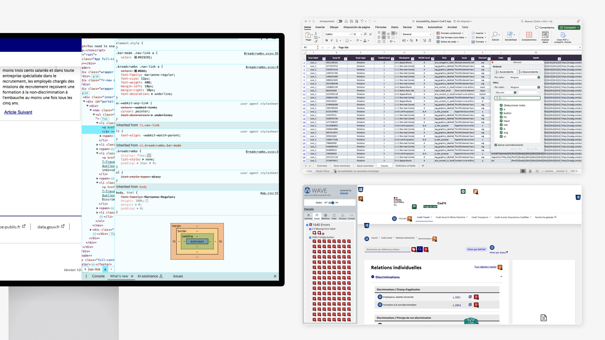
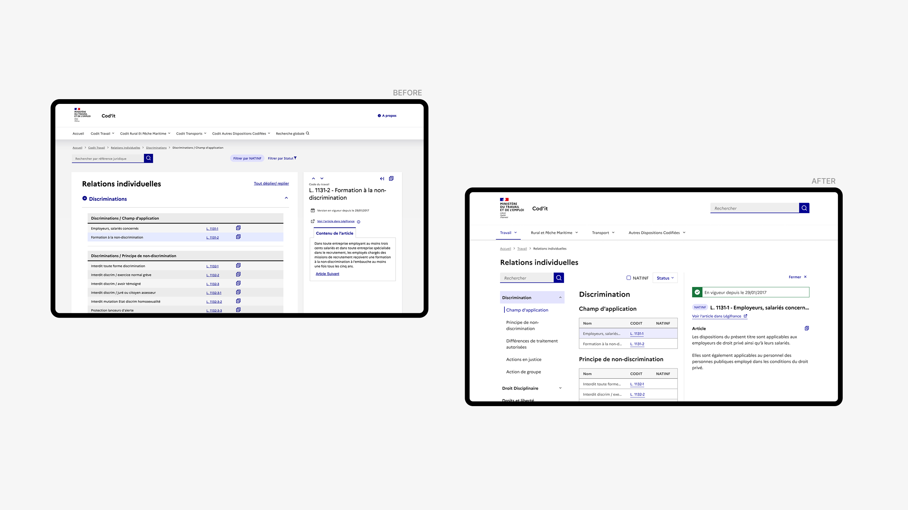
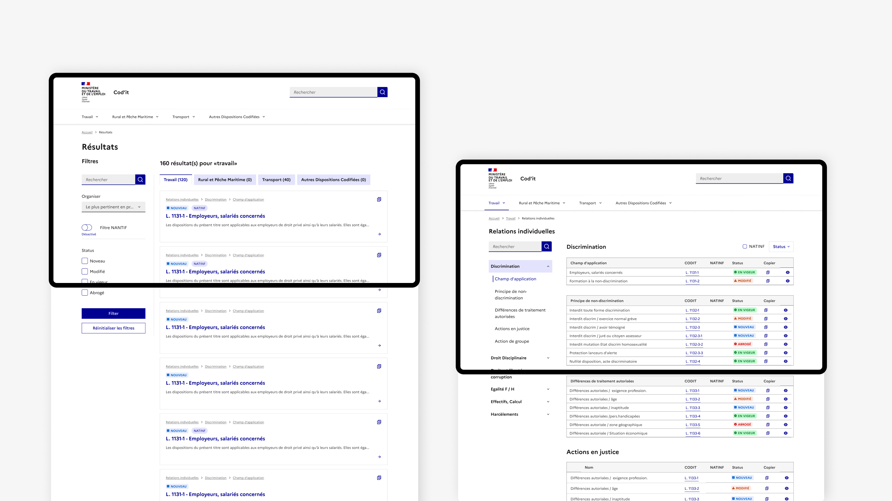

01 · Challenge
The Challenge
Cod'IT is the French government's digital platform for codified labor law — used by government inspectors and citizens to access legal provisions that govern workplace regulations across France. It's an essential public service tool.
The problem: the platform was failing the people it was meant to serve. Navigation was deeply nested (7+ levels), search results were unstructured and often irrelevant, contrast was insufficient, and assistive technology support was broken. For users relying on screen readers, the platform was effectively inaccessible.
This wasn't just a usability issue — it was a compliance risk. The French government's RGAA accessibility framework (aligned with WCAG 2.1 AA) requires public-sector digital services to meet specific inclusion standards. Cod'IT fell significantly short.
I was brought in to lead the accessibility audit and deliver a redesign strategy that would bring the platform into compliance while fundamentally improving the experience for all users — not just those with disabilities.
Project Constraint
The constraint that shaped the work: I had one month. Every decision about scope, prioritization, and depth had to be deliberate. There was no room for broad exploration — I needed to identify the highest-impact issues, propose actionable solutions, and deliver a complete audit report and design proposals the Ministry could implement immediately.
02 · Approach
Audit Approach
I designed a four-layer audit methodology to ensure comprehensive coverage within the compressed timeline:
Layer 01
Automated testing
Used AXE, WAVE, IBM Accessibility Checker, and Silktide to surface color contrast failures, missing alt text, and ARIA role violations across the platform. This established a quantitative baseline quickly.
Layer 02
Manual screen reader testing
Navigated the full platform using NVDA and VoiceOver to evaluate real-world assistive technology compatibility. Automated tools catch structural issues; manual testing reveals how the experience actually feels for someone using a screen reader.
Layer 03
Heuristic review
Evaluated the platform's information architecture, visual hierarchy, and interaction patterns against WCAG 2.1 AA criteria and RGAA v4.1 standards.
Layer 04
Stakeholder interviews
Spoke with government inspectors and digital policy managers to understand which tasks were most critical and where friction was highest. This ensured the audit prioritized issues by real-world impact, not just technical severity.

03 · Findings
Key Findings
The audit revealed issues across five areas, listed in priority order — based on how many users were affected and how severely each issue blocked critical tasks:
Priority 01
Information architecture
Content was buried under 7+ levels of nested navigation with no breadcrumbs or orientation cues. This affected every user on every visit. Even experienced inspectors struggled to locate the legal provisions they needed. Fixing this had the broadest impact.
Priority 02
Search experience
Results were unfiltered and poorly structured. Users searching for specific legal articles had to scan through irrelevant content, leading to high frustration and low completion rates. Since search was the primary way inspectors accessed legal provisions, this was second priority.
Priority 03
Accessibility violations
Missing form labels, insufficient contrast ratios, and absent focus indicators meant screen readers couldn't interpret core content. Users relying on keyboard navigation had no visible indication of where they were on the page.
Priority 04
Assistive technology gaps
Missing ARIA roles, unlabeled inputs, and absent semantic HTML made screen reader navigation effectively impossible for critical workflows.
Priority 05
Design inconsistency
Typography, spacing, and UI elements varied across pages, increasing cognitive load and undermining trust. While less urgent than the structural issues, this contributed to the overall experience of confusion and unreliability.
04 · Design
Design Strategy & Proposals
The hardest call wasn't what to flag — it was what to put first. A strict WCAG-based approach would have led the report with contrast failures and missing alt text, which are the most measurable violations and what clients typically expect at the top of an accessibility audit. We pushed for information architecture to lead instead. The reasoning: fixing contrast doesn't help a screen reader user who can't navigate a 7-level hierarchy. The structural problem was upstream of every other finding — address IA first and all subsequent fixes land on coherent ground. Building the severity-times-impact scoring partly served to make that argument legible to Ministry stakeholders who were expecting compliance metrics at the top, not an IA proposal.
I prioritized fixes using a severity-times-impact framework: issues that affected the most users and blocked the most critical tasks were addressed first. Navigation and search improvements took priority over visual polish.
Information architecture overhaul
The 7-layer navigation was restructured to 3 levels, organized around critical tasks rather than internal content taxonomy. I added breadcrumbs and clear section labels so users always knew where they were and how to get back.

Homepage redesign
I redesigned the homepage around three primary user tasks: search, access documentation, and view recent updates. Applied AA-level contrast throughout and reduced scrolling depth significantly by eliminating redundant content blocks and tightening the visual hierarchy.

Search redesign
Restructured search results with a clear hierarchy: title, excerpt, metadata. Added filtering capabilities and implemented ARIA live regions so screen reader users would receive real-time feedback as results updated.
Accessible component specifications
Built a set of accessible component specs in Figma — buttons, forms, typographic styles — all designed to RGAA standards with proper focus states, semantic HTML annotations, and accessible color tokens. These served as a reference for the development team's implementation.
05 · Outcome
Outcome
The Ministry adopted my recommendations as the blueprint for Cod'IT's accessibility remediation. The audit report and design proposals I delivered shaped the direction of the platform's redesign. While I wasn't involved in the implementation phase, the deliverables were designed to be actionable — every recommendation included priority level, expected impact, and specific design specs the development team could build from.
Reducing the navigation depth from 7 levels to 3 meant inspectors could reach legal provisions roughly 30% faster based on task-based testing during the audit.
The audit identified the specific violations preventing compliance, and the redesign proposals were designed to bring the platform to near-AA level.
The restructured results and filtering capabilities directly addressed the primary frustration users reported in interviews.
Reduced by an estimated 40% on key pages, making content more immediately accessible on all screen sizes.
Beyond the platform
Alongside the audit report, I delivered the four-layer methodology itself as a documented, replicable framework — not just the findings, but the process for producing them. This gave the Ministry a tool they could apply to future accessibility audits across other government digital services, rather than depending on external specialists for every evaluation.
06 · Reflections
Reflections
01
One month forced clarity
The compressed timeline was actually a design advantage — it eliminated the temptation to audit everything and forced me to prioritize ruthlessly by impact. Every hour spent had to justify itself against the question: "Will this recommendation make the biggest difference for the most users?"
02
Accessibility improves usability for everyone
Every accessibility improvement — clearer hierarchy, better contrast, simpler navigation — also made the platform faster and easier for sighted, able-bodied users. The business case for accessibility was proven through the work itself.
03
Working across languages builds a specific kind of adaptability
Conducting the audit and writing the deliverables in French sharpened my communication — when you can't rely on your native language, you learn to be more precise and deliberate in how you present findings and recommendations.
04
Solo ownership at this scope requires discipline
Without a team to distribute tasks, I had to be both strategist and executor — defining the methodology, running the audit, synthesizing findings, designing solutions, and presenting to stakeholders. The experience reinforced that senior-level autonomy isn't about working alone; it's about knowing how to structure your own work so that every piece connects to the larger goal.